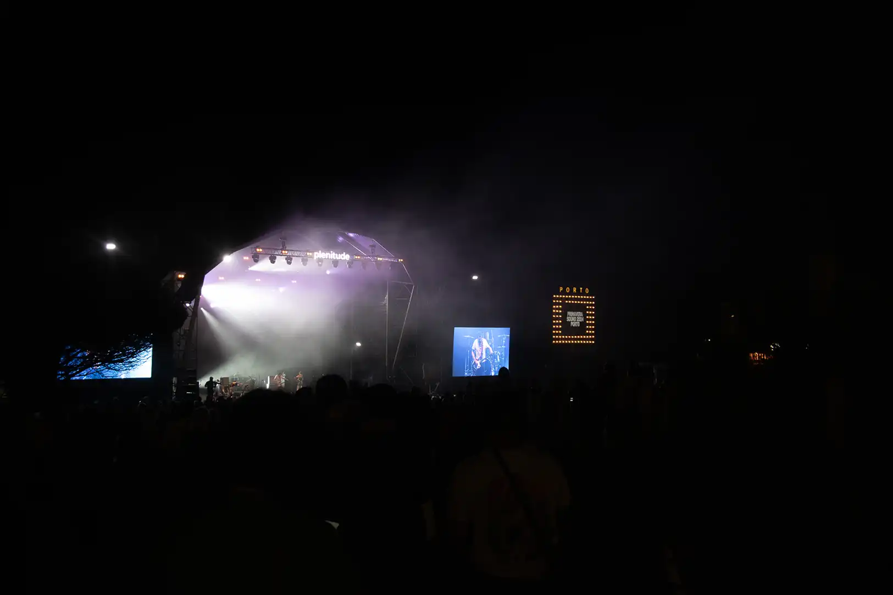
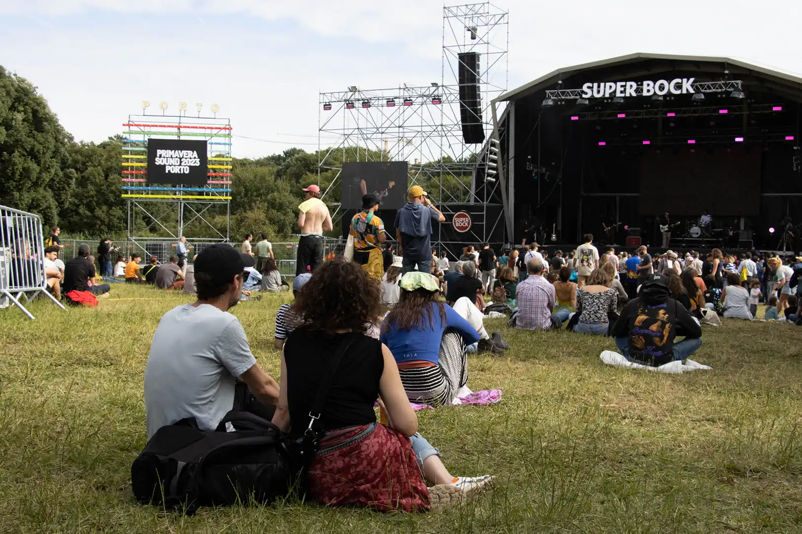
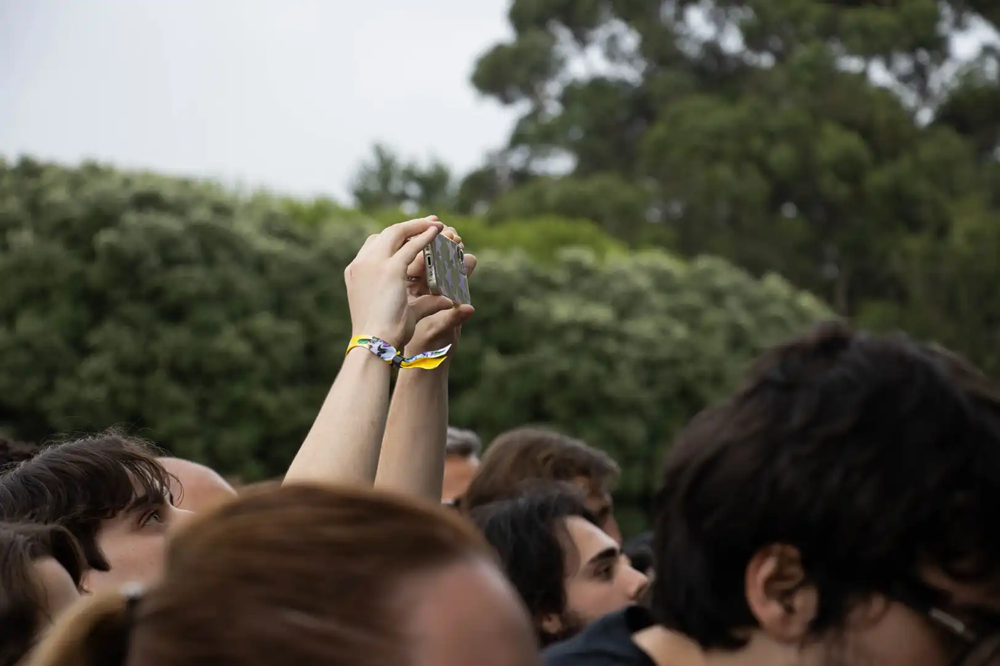
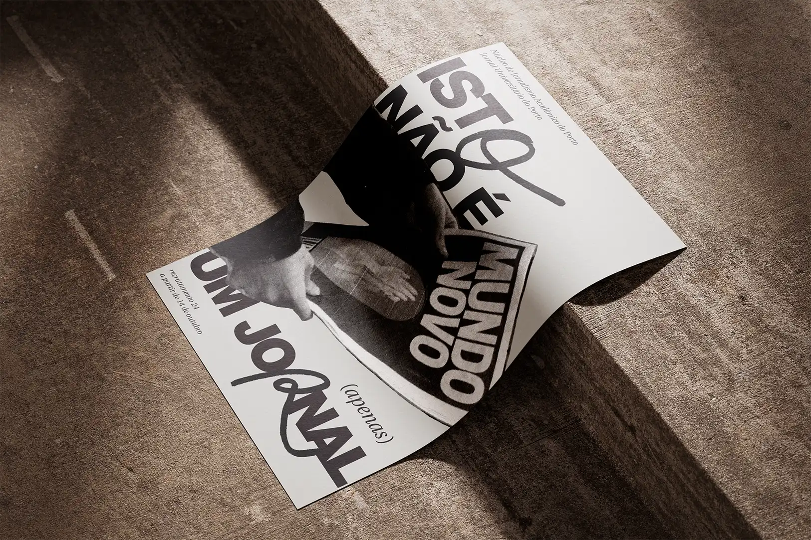

[Bookbinding Workshops]
Kettle stitch binding & japanese binding
AE/ESAD — Matosinhos
june 2025
During my degree, I always tried to be able to develop my own prototypes, especially when it came to editorial design projects. This allowed me to become more independent when it came to the project prototyping process.
Thus, in the context of AEESAD's Cultural Week, I was asked to design and conduct two workshops for the ESAD academic community, focusing on bookbinding techniques applied to the development of editorial project prototypes. The primary objective of this initiative was to share knowledge among students and empower them in the prototyping process.
The following videos were produced and kindly provided by AEESAD.
[Photography]
Multimedia team
Jornal Universitário do Porto
june 2023 — june 2024
Produced visual content (editorial photography, event coverage) and graphic materials for the newspaper, as well as its online/offline communication channels. This set of photos are part of the JUP's media coverage of the Primavera Sound festival and were developed alongside the reporter, in order to support the written article.
  
[Recruitment campaign poster design]
Multimedia team
Jornal Universitário do Porto
october 2024
Spector Books is a Leipzig-based independent publisher working at the intersection of art, theory, and design. This identity redesign explores the book as the central object and symbol of exchange, a meeting point between author, reader, and publisher. The design system places the book at the heart of the brand, presenting it in a resting state, ready to be activated, selected, or imagined. This visual metaphor translates the publisher’s role in giving form and life to ideas through collaboration and production. Built with flexibility in mind, the identity seeks to adapt itself seamlessly across editorial, promotional, and spatial applications. It seeks to maintain cohesion while allowing for variation, echoing the fluid nature of Spector Books’ interdisciplinary publishing approach.
